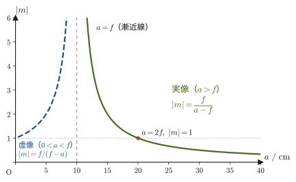
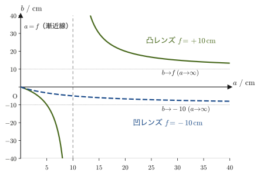

第15章レンズと結像
眼鏡をかけると近くの文字がはっきり見え，虫めがねを近づけると小さな文字が大きく見え，カメラのレンズを通すと遠くの景色がフィルムやセンサーの上に縮小された像として写り込む——これらはすべて，透明な物体（多くはガラスやプラスチック）の形を利用して，光線の進む向きを意図的に曲げ，1点から出た光をふたたび1点に集める（あるいは，集まっているように見せる）道具，レンズ（lens）のはたらきである．前章（第14章）で学んだ光の屈折の法則——境界面で光が折れ曲がる法則——は，レンズという「特別な形に磨かれた境界面（球面）を2つ持つ透明体」に応用されると，遠くの物体の像を近くに，小さな物体の像を大きく，あるいはその逆に映し出す道具になる．
高校物理でも，凸レンズについて「$\dfrac{1}{a}+\dfrac{1}{b}=\dfrac{1}{f}$（写像公式，あるいはレンズの公式）」，凹レンズについて「$\dfrac{1}{a}+\dfrac{1}{b}=-\dfrac{1}{f}$」という公式を，符号の約束（実像は$b\gt 0$，虚像は$b\lt 0$，など）とセットで暗記した記憶があるかもしれない．なぜ凸レンズと凹レンズで符号が反転するのか，なぜ「実像は正・虚像は負」と決めるとうまくいくのか——高校の教科書ではその理由まで踏み込まれないことが多く，結果として「呪文のような符号のルール」として覚えるしかなかった読者も多いだろう．この章では，レンズの結像を，光線の幾何学（相似な三角形の辺の比）だけから，一行も飛ばさずに導く．はじめは距離を長さ（正の量）として測って場合ごとに公式を導き，そのあとで「実像を正・虚像を負」と決めれば，凸レンズ・凹レンズ・実像・虚像のすべての場合が1つの式にまとまることを確かめる．符号の約束は覚えるべき別ルールではなく，場合分けをまとめるための工夫だということが分かるはずである．
さらに，高校物理では扱われないことが多い「2枚以上のレンズを組み合わせたときの結像」——望遠鏡や顕微鏡，カメラのズームレンズの中身——についても，1枚ずつ像を追いかけていく逐次結像法という考え方と，2枚のレンズを密着させたときの合成焦点距離の公式を扱う．章の最後では，虫めがね・カメラ・顕微鏡という身近な光学機器が，この章で導いた公式のどの部分を使って設計されているかを見る．
- レンズ・光軸・焦点の定義と，物体距離$a$・像距離$b$・焦点距離$f$・倍率$m$に関する符号の約束（実像・虚像，凸レンズ・凹レンズ，実物体・虚物体，正立・倒立）を一つの表にまとめて使えるようにすること
- 凸レンズの写像公式$\dfrac{1}{a}+\dfrac{1}{b}=\dfrac{1}{f}$を，物体距離$a$が焦点距離$f$より大きい場合（倒立実像）と小さい場合（正立虚像）の両方について，相似な三角形の比から一行も飛ばさずに導出すること
- 凹レンズの写像公式（符号の約束の下で同じ形$\dfrac{1}{a}+\dfrac{1}{b}=\dfrac{1}{f}$，$f\lt 0$）を同様に導出すること，および像の倍率$m=-b/a$の意味
- 2枚のレンズによる結像を，1枚ずつ像を追いかける逐次結像法で求める手順（虚物体の扱いを含む）と，密着させた2枚の薄いレンズの合成焦点距離$\dfrac{1}{f_{\mathrm{c}}}=\dfrac{1}{f_1}+\dfrac{1}{f_2}$の導出
- 虫めがねの角倍率，カメラの結像，顕微鏡の総合倍率——レンズの公式が実際の光学機器の設計にどうつながっているか
15.1 レンズと焦点，符号の約束
この節では，レンズと，レンズを特徴づける最も重要な点である焦点を定義し，これから何度も使う記号（物体距離$a$，像距離$b$，焦点距離$f$，倍率$m$）と，それらの符号の約束を先にまとめて示す．符号の理由（なぜ実像を正，虚像を負に決めるとうまくいくのか）は15.2節・15.3節の導出の中で明らかになるので，ここでは「今後この規則に従う」という取り決めとして受け取ってほしい．
定義15.1 レンズと光軸
光は，空気中からガラスなどの透明な物体に入射すると，境界面で屈折して進む向きを変える（第14章）．この性質を利用し，光線を1点に集めたり（集束），1点から広がるように見せたり（発散）する目的でつくられた，2つの球面（の一部）で囲まれた透明体をレンズ（lens）という．レンズの中央が周辺より厚いものを凸レンズ（convex lens，光を集める向きにはたらく），中央が周辺より薄いものを凹レンズ（concave lens，光を広げる向きにはたらく）という．レンズの両球面の中心（球の中心）を結ぶ直線を光軸（optical axis）と呼び，以下では光軸に垂直な方向の距離（高さ）を考えるときはつねに光軸を基準にする．この章では，レンズの厚みは無視できるほど薄いと仮定し（薄レンズ近似），さらに光軸に近く，光軸となす角が小さい光線（近軸光線，paraxial ray）だけを考える（近軸近似）．実際のガラスレンズには厚みがあり，周辺の光線はこの近似からずれるが，2つの近似のもとでの公式は，カメラや眼鏡，顕微鏡などほとんどの実用的な場面で十分によい近似になる．
定義15.2 焦点・焦点距離
光軸に平行な光線を左からレンズに入射させると，凸レンズでは屈折後にすべての光線が光軸上のある1点に集まり，凹レンズでは屈折後の光線が光軸上のある1点から広がってきたように（逆向きに延長すると1点で交わるように）進む．薄いレンズでは，光軸上でレンズの中心から等しい距離$\abs{f}$だけ前後に離れた2点（レンズの中心に関して対称な2点）が焦点になる．物体側（左）の点を前方焦点$F$，像側（右）の点を後方焦点$F'$という．
- 凸レンズ：光軸に平行な光を左から入射させると後方焦点$F'$に集まり，右から入射させると前方焦点$F$に集まる．前方焦点$F$を通ってレンズに入る光は，屈折後に光軸に平行に進む．
- 凹レンズ：光軸に平行な光を左から入射させると，屈折後の光は前方焦点$F$から広がってきたように進む．後方焦点$F'$に向かってレンズに入る光は，屈折後に光軸に平行に進む．
（レンズの両側が同じ媒質，たとえば空気であれば，前後の焦点距離は等しい．）レンズの中心から焦点までの距離$\abs{f}\ [\mathrm{m}]$を焦点距離（focal length）と呼ぶ．本書では，凸レンズの焦点距離を$f\gt 0$，凹レンズの焦点距離を$f\lt 0$と符号で区別する（表15.1）．焦点距離の逆数$D=1/f\ [\mathrm{m^{-1}}]$を度数（power，単位はディオプトリー，記号$\mathrm{D}$）といい，眼鏡店でのレンズ処方（「$-2.0\ \mathrm{D}$の近視用レンズ」など）で日常的に使われる量である．
発展：なぜ平行光線が1点に集まるのか — 薄いプリズムの重ね合わせ
レンズの表面は球面なので，光軸から高さ$h$の位置では，球面が光軸に垂直な面に対して少し傾いている．傾きの角は，球面の半径を$R$として$h/R$ほど（小さな角のとき）である．したがってレンズの高さ$h$の位置は，2つの面がつくる頂角$\alpha$がほぼ$h/R_1+h/R_2$の薄いプリズムとみなせる（両凸レンズで，$R_1,R_2$を2つの球面の半径の大きさとした場合．レンズは，高さ$h$が大きいほど頂角の大きなプリズムになっている）．
屈折率$n$の薄いプリズムが光を曲げる角は，第14章の屈折の法則から次のように求まる．光が第1面に入射する角を$\theta_1$，そこでの屈折角（プリズム内部での進む向きと面の法線がなす角）を$\theta_1'$，第2面にプリズム内部から入射する角を$\theta_2'$，空気中へ出ていく角を$\theta_2$とする．角が小さいときは$\sin\theta\approx\theta$なので，屈折の法則は$\theta_1=n\theta_1'$，$\theta_2=n\theta_2'$となる．プリズム内部の光線がつくる三角形の角の関係から$\theta_1'+\theta_2'=\alpha$なので，光が曲げられる角（振れ角）は
$$ \delta=\theta_1+\theta_2-\alpha=n(\theta_1'+\theta_2')-\alpha=(n-1)\alpha $$となる．つまり，レンズの高さ$h$の位置を通る光は，$\alpha\propto h$より，$h$に比例した角$\delta=(n-1)h\left(\dfrac{1}{R_1}+\dfrac{1}{R_2}\right)$だけ光軸のほうへ曲げられる．そこで比例定数を
$$ \frac{1}{f}=(n-1)\left(\frac{1}{R_1}+\frac{1}{R_2}\right) $$とおくと（空気中の両凸の薄いレンズのレンズメーカーの公式），$\delta=h/f$となる．光軸に平行に高さ$h$で入った光線は，レンズで角$\delta=h/f$だけ曲げられるので，光軸と交わる位置はレンズから$h/\delta=f$——高さ$h$によらない——の点になる．これが「平行な光が焦点$F'$の1点に集まる」理由である．たとえば，$n=1.5$，$R_1=R_2=20\ \mathrm{cm}$のガラスレンズなら，$1/f=0.5\times(1/20+1/20)\ \mathrm{cm^{-1}}$より$f=20\ \mathrm{cm}$である．このように焦点距離$f$は，レンズの材質（屈折率$n$）と表面の曲がり具合（半径$R_1,R_2$）で決まる．凹レンズでは頂角の向きが逆になり，$f\lt 0$になる．
ただし，この議論は$\sin\theta\approx\theta$の近軸近似を使っている．高さ$h$が大きい周辺の光線ではこの近似が破れ，光線は焦点からずれる（球面収差）．カメラのレンズが何枚ものレンズの組み合わせでできているのは，このずれなどの収差を打ち消すためである．本章の公式は，すべて薄レンズ・近軸光線の近似のもとで成り立つ式である．また，「光軸に平行な光は焦点に集まる」という性質を，レンズの中心を通る光線は直進するという性質（15.1節末の作図の手順を参照）と組み合わせると，次の15.2節・15.3節のように結像の公式が導ける．
定義15.3 実像と虚像
物体から出た光が，レンズを通過したあとに実際に1点に集まってできる像を実像（real image）という．実像はスクリーンや壁，カメラのセンサーなど，光が実際に届く面に映し出すことができる．これに対し，レンズを通過した後の光線が実際には1点に集まらず，光線を逆向き（物体側）に延長した線だけが1点で交わるためにできる像を虚像（virtual image）という．虚像の位置には実際に光が届いているわけではないので，スクリーンに映すことはできない（虚像は，その位置に物体があるかのように，人の目にだけ見える像である）．
| 量 | 正（$+$） | 負（$-$） |
|---|---|---|
| 焦点距離 $f$ | 凸レンズ | 凹レンズ |
| 物体距離 $a$ | 実物体（レンズの前方に実際にある物体） | 虚物体（レンズの後方で光が収束する途中をさえぎった場合．15.4節で登場） |
| 像距離 $b$ | 実像（レンズの後方，光が実際に集まる） | 虚像（レンズの前方，光は集まらず延長線上にのみできる） |
| 倍率 $m=-b/a$ | 正立（物体と同じ向き） | 倒立（物体と逆向き） |
定義15.4 物体距離・像距離の符号の約束と統一公式
レンズの中心から物体までの光軸に沿った距離を物体距離$a$，レンズの中心から像までの距離を像距離$b$とする．表15.1の符号の約束（実像・実物体を正，虚像・虚物体を負，凸レンズの$f$を正・凹レンズの$f$を負）に従うと，凸レンズ・凹レンズのどちらについても，物体距離・像距離・焦点距離のあいだにはただ1つの式
\begin{equation} \frac{1}{a}+\frac{1}{b}=\frac{1}{f} \label{eq:15-unified-lens} \end{equation}が成り立つ．この式を（統一形の）薄いレンズの写像公式という．この式が実際にどの場合にも成り立つことは，15.2節（凸レンズ）・15.3節（凹レンズ）で相似な三角形を使って導出しながら確かめる．高校の教科書などでは，凸レンズの公式$1/a+1/b=1/f$と凹レンズの公式$1/a+1/b=-1/f$（$f$は焦点距離の大きさ）を別々に書くことが多いが，表15.1のように$f$の符号を決めれば同じ式であり，本書では以下すべて式\eqref{eq:15-unified-lens}の統一形で書く．
定義15.5 倍率
物体の高さ（光軸からの距離．光軸より上を正とする）を$h_A$，像の高さを$h_B$とするとき，
$$ m=\frac{h_B}{h_A}=-\frac{b}{a} $$を（符号付きの）倍率（magnification）という．$\abs{m}=\abs{h_B/h_A}=\abs{b/a}$が，像が物体の何倍の大きさかを表す（$\abs{h_B/h_A}=b/a$となることは15.2節の導出の中で示す）．$\abs{m}\gt 1$なら像は物体より大きく，$\abs{m}\lt 1$なら物体より小さい．符号は像の向きを表し，$m\lt 0$なら像は物体に対して上下（左右）逆さま（倒立），$m\gt 0$なら同じ向き（正立）である．実像（$b\gt 0$）では$m\lt 0$なので倒立，虚像（$b\lt 0$）では$m\gt 0$なので正立になる．つまり「$a$と$b$が同符号なら倒立，逆符号なら正立」と覚えればよい．
イメージ：作図の手順 — 3本の基準光線
レンズによる像の位置は，計算だけでなく，作図（光線をていねいに描くこと）でも求められる．物体の先端（光軸から離れた点）から出る無数の光線のうち，進む向きが簡単に分かる次の3本を選んで描けば，その交点（実像の場合）または交点から逆向きに延ばした線の交点（虚像の場合）として像の先端が求まる．
- 光軸に平行な光線——屈折後は後方焦点$F'$を通る（凸レンズ）．凹レンズでは，屈折後の延長線が前方焦点$F$を通るように発散する．
- レンズの中心を通る光線——薄いレンズの中心付近では，レンズの前後の面がほぼ平行な薄い板とみなせるので，屈折による方向の変化が無視できるほど小さくなる．この光線は，向きを変えずにそのまま直進する（凸レンズ・凹レンズとも共通）．
- 前方焦点$F$を通る光線（凸レンズ）——屈折後は光軸に平行に進む（1.の逆）．凹レンズでは，後方焦点$F'$に向かって進む光線が，屈折後に光軸に平行になる．
図15.2は，物体距離が$a=2f$（ちょうど焦点距離の2倍）のときにこの3本の光線を実際に描いたものである．高校物理で慣れている読者も多いと思うが，3本のうち2本を選べば像の位置は決まる（3本目は作図の検算に使える）．凹レンズの3本の作図は図15.6（15.3節）に示す．作図に使う線は，光が実際に通る道筋を実線，実際には光が通らず延長しただけの部分を破線で描き分ける約束である．
例題15.1 眼鏡レンズの度数
(1) 焦点距離$f=25\ \mathrm{cm}$の凸レンズの度数$D$を求めよ．(2) 度数$D=-2.0\ \mathrm{D}$の近視用眼鏡レンズの焦点距離$f$を求め，凸レンズ・凹レンズのどちらかを答えよ．
解答 (1) 定義15.2より$D=1/f$であり，度数はメートル単位の焦点距離の逆数として定義されるので，まず$f=25\ \mathrm{cm}=0.25\ \mathrm{m}$に直す．
$$ D=\frac{1}{f}=\frac{1}{0.25\ \mathrm{m}}=4.0\ \mathrm{D} $$(2) $D=1/f$を$f$について解くと$f=1/D$なので，
$$ f=\frac{1}{D}=\frac{1}{-2.0\ \mathrm{D}}=-0.50\ \mathrm{m}=-50\ \mathrm{cm} $$$f\lt 0$なので，表15.1の約束より凹レンズである（近視用の眼鏡レンズが凹レンズであることは，理科の授業や眼鏡店の処方箋（「$\mathrm{S}-2.00$」のような表記の$\mathrm{S}$は球面度数の意味）で見聞きしたことがある読者も多いだろう）．
15.2 凸レンズの写像公式の導出
この節では，凸レンズについて，物体距離$a$・像距離$b$・焦点距離$f$の関係（写像公式）を，相似な三角形の辺の比だけから導く．物体の位置によって，(i) $a\gt f$のとき（倒立実像ができる）と，(ii) $0\lt a\lt f$のとき（正立虚像ができる）の2つの場合があるので，順に見ていく．この節の導出では距離$a,b,f$を，ひとまず長さ（正の量）として扱い，虚像の場合は最後に符号付きの量に直す．
導出：凸レンズの写像公式 — (i) $a\gt f$の場合（倒立実像）
図15.3のように，物体の先端から出る2本の光線を考える．1本目はレンズの中心を通り，直進する光線（15.1節の作図の基準光線2）．2本目は光軸に平行に入射し，屈折後に後方焦点$F'$を通る光線（基準光線1）である．この2本の光線が交わる点が，像の先端になる．
まず1本目の光線（中心を通る直進光線）に注目する．物体の先端・物体の足もと（光軸上の点）・レンズの中心の3点でできる直角三角形と，像の先端・像の足もと・レンズの中心の3点でできる直角三角形を比べると，どちらも「レンズの中心における頂角」が対頂角（同じ2本の直線が作る向かい合う角）として等しく，かつどちらも光軸との間に直角を持つ．したがって2つの直角三角形は2角がそれぞれ等しく（AA相似条件），相似である．相似な図形では対応する辺の比がすべて等しいので，
$$ a:b=h_A:h_B \qquad(\text{中心を通る光線の相似三角形より}) $$という比例式が成り立つ．
次に2本目の光線（平行光線→$F'$を通る光線）に注目する．レンズ面上の点（高さ$h_A$，光軸に平行な光線がレンズに入る点）・レンズの中心・$F'$の3点でできる直角三角形（直角の頂点はレンズの中心）と，像の先端・像の足もと・$F'$の3点でできる直角三角形（直角の頂点は像の足もと）を比べる．この2つの直角三角形も，$F'$における頂角が対頂角として等しく，どちらも光軸との間に直角を持つので，同じくAA相似条件により相似である．したがって，
$$ f:(b-f)=h_A:h_B \qquad(\text{平行光線→}F'\text{を通る光線の相似三角形より}) $$が成り立つ（レンズから$F'$までの距離が$f$，$F'$から像までの距離が$b-f$であることは，図15.3の寸法線の通りである）．
2つの比例式はどちらも右辺が$h_A:h_B$で等しいので，
$$ a:b=f:(b-f) $$が得られる．比例式$a:b=f:(b-f)$は「内項の積＝外項の積」（比例式の基本性質）より
$$ b\,f=a\,(b-f) $$と書き直せる．両辺を$abf$（$a,b,f$のいずれも0でない正の量）で割ると，
$$ \frac{bf}{abf}=\frac{a(b-f)}{abf} \qquad\therefore\quad \frac{1}{a}=\frac{b-f}{bf} $$右辺を$\dfrac{b-f}{bf}=\dfrac{b}{bf}-\dfrac{f}{bf}=\dfrac{1}{f}-\dfrac{1}{b}$のように2つの分数の差に分けると，
$$ \frac{1}{a}=\frac{1}{f}-\frac{1}{b} \qquad\therefore\quad \frac{1}{a}+\frac{1}{b}=\frac{1}{f} $$が得られる．これが，$a\gt f$の場合の凸レンズの写像公式である．
（導出終わり）
倍率については，1本目の光線の相似三角形から得た$a:b=h_A:h_B$より，像の大きさは$\abs{h_B/h_A}=b/a$である．実像（$b\gt 0$）は倒立なので，符号付きの倍率は定義15.5より$m=-b/a$（負）となる．さらに，$1/a+1/b=1/f$から$b=af/(a-f)$なので，
$$ \abs{m}=\frac{b}{a}=\frac{f}{a-f} $$となり，$a$が$f$に近いほど$\abs{m}$は大きく（$a\to f^+$で$\abs{m}\to\infty$），$a$が大きいほど$\abs{m}$は小さくなる（$a\to\infty$で$\abs{m}\to0$）．とくに，
$$ \begin{cases} f\lt a\lt 2f \text{ のとき} & \abs{m}\gt 1 \\ a=2f \text{ のとき} & \abs{m}=1 \\ a\gt 2f \text{ のとき} & \abs{m}\lt 1 \end{cases} $$という関係が成り立つ（境目の$a=2f$を代入すると$\abs{m}=f/(2f-f)=1$で確かに一致する）．この$\abs{m}$と$a$の関係は，(ii)の場合（$0\lt a\lt f$）もあわせて，公式15.1のあとの図15.5にグラフで示す．
導出：凸レンズの写像公式 — (ii) $0\lt a\lt f$の場合（正立虚像）
図15.4のように，物体距離が焦点距離より小さい（$0\lt a\lt f$）と，光線はレンズの後方で交わらず，発散していく．しかし，2本の光線をレンズより手前（物体側）へ逆向きに延長すると，1点で交わる．この交点が虚像の先端である．ここでは，レンズから虚像までの距離を，ひとまず長さ（正の量）$\abs{b}$として表すことにする（表15.1の約束では虚像の像距離$b$は負なので，$\abs{b}=-b$である）．
中心を通る光線がつくる相似な三角形（物体の先端・物体の足もと・レンズの中心，と，虚像の先端・虚像の足もと・レンズの中心）を比べる．この場合，物体も虚像もレンズの同じ側にあり，2つの三角形の「レンズの中心における角」は，物体の先端と虚像の先端を通る同じ1本の直線が光軸となす共通の角である（(i)のような対頂角ではない）．どちらも光軸との間に直角を持つので，AA相似条件により相似であり，
$$ a:\abs{b}=h_A:h_B $$が成り立つ．次に，平行光線に注目する．この光線は，(i)の場合とまったく同じ理由（薄いレンズでは，光軸に平行な光線は物体の位置によらずつねに後方焦点$F'$を通るように屈折するという，15.1節の基準光線1の性質）により，屈折後は後方焦点$F'$（光軸上，レンズより後方に$f$の位置）へ向かう1本の直線上を進む．この直線は屈折後の実際の経路（レンズより後方）でも，逆向きに延長した部分（レンズより手前，虚像を含む側）でも同じ1本の直線なので，レンズ面上の点（高さ$h_A$）・レンズの中心（光軸上の点，直角の頂点）・$F'$の3点でできる直角三角形と，虚像の先端・虚像の足もと・$F'$の3点でできる直角三角形を比べると，どちらも$F'$における角が（同じ1本の直線がつくる共通の角として）等しく，かつどちらも光軸との間に直角を持つので，AA相似条件により相似であり，
$$ f:(f+\abs{b})=h_A:h_B $$が成り立つ（$F'$からレンズの中心までの距離が$f$，$F'$から虚像の足もとまでの距離が，レンズを挟んで反対側に$\abs{b}$だけ離れているために$f+\abs{b}$になることは，図15.4の寸法線のとおりである）．2つの比例式の右辺がどちらも$h_A:h_B$なので，
$$ a:\abs{b}=f:(f+\abs{b}) $$となり，「内項の積＝外項の積」より
$$ a\,(f+\abs{b})=\abs{b}\,f $$である．両辺を$a\abs{b}f$で割ると，
$$ \frac{1}{a}=\frac{f+\abs{b}}{\abs{b}f}=\frac{f}{\abs{b}f}+\frac{\abs{b}}{\abs{b}f}=\frac{1}{\abs{b}}+\frac{1}{f} $$となる．両辺から$1/\abs{b}$を引くと，
$$ \frac{1}{a}-\frac{1}{\abs{b}}=\frac{1}{f} $$が得られる．ここで，虚像の像距離を表15.1の約束どおり符号付きの量$b=-\abs{b}$（$b\lt 0$）と書き直すと，$-1/\abs{b}=1/b$なので，上の関係は
$$ \frac{1}{a}+\frac{1}{b}=\frac{1}{f} $$とまったく同じ形になる．つまり，像距離を符号付きの量として扱うことにすれば，(i)の場合と同じ統一公式$1/a+1/b=1/f$（式\eqref{eq:15-unified-lens}）が，この場合にもそのまま成り立つ．以降，本書ではつねに$b$を符号付きの量として扱う．なお，$a:\abs{b}=h_A:h_B$より$\abs{h_B/h_A}=\abs{b}/a$であり，虚像（$b\lt 0$）の符号付き倍率は$m=-b/a\gt 0$（正立）となる．
（導出終わり）
公式15.1 凸レンズの写像公式（統一形）
凸レンズ（焦点距離$f\gt 0$）による結像では，物体距離$a$（実物体なら$a\gt 0$）・像距離$b$（実像なら$b\gt 0$，虚像なら$b\lt 0$）のあいだに，$a$と$f$の大小によらず
$$ \frac{1}{a}+\frac{1}{b}=\frac{1}{f} $$が成り立つ（式\eqref{eq:15-unified-lens}と同じ式）．倍率は$m=-b/a$であり，$a\gt f$（倒立実像）のとき$\abs{m}=f/(a-f)$，$0\lt a\lt f$（正立虚像）のとき$\abs{m}=f/(f-a)$である．とくに$a=2f$で$\abs{m}=1$，$f\lt a\lt 2f$で$\abs{m}\gt 1$，$a\gt 2f$で$\abs{m}\lt 1$となる（図15.5）．
$0\lt a\lt f$のときは$0\lt f-a\lt f$なので，$\abs{m}=f/(f-a)\gt 1$，すなわち虚像は物体より必ず大きい．$a\to 0$で$\abs{m}\to1$，$a\to f-0$で$\abs{m}\to\infty$である．

考察：$a=f$のとき像はどうなるか
式\eqref{eq:15-unified-lens}で$a\to f$とすると，$1/b=1/f-1/a\to0$となるので，$b\to\infty$である．物体をちょうど前方焦点の位置に置くと，物体の先端から出て光軸に平行に進む光線は屈折後に後方焦点$F'$を通り，一方，中心を通る光線は直進するが，$a=f$のとき，中心を通る光線の傾きは$h_A/a=h_A/f$であり，平行光線が屈折後にたどる直線（$F'$を通る）の傾きも計算すると同じ$h_A/f$になる——つまり，2本の光線は完全に平行になり，レンズの後方ではどこまで進んでも交わらない．平行な2本の直線は「無限遠で交わる」と考えると，これは$b=\infty$（実像が無限遠にできる）と整合する．物理的には，像が消えてなくなるのではなく，スクリーンをどれだけレンズから遠ざけても像が結ばれない（ピントが合う位置が無限に遠い）状態になる，と理解するのがよい．$a$を$f$の外側から近づけると実像は正の無限遠へ遠ざかり（$b\to+\infty$），$f$の内側から近づけると虚像が物体と同じ側の負の無限遠へ遠ざかる（$b\to-\infty$）ので，$a=f$を境に像は「実像から虚像へ」入れ替わる（図15.7の凸レンズの曲線が$a=f$で切れているのはこのためである）．
逆に，物体が無限に遠い（$a\to\infty$）とき，$1/a\to0$より$1/b=1/f$，すなわち$b=f$となる．虫めがねで太陽光を紙に集めるとき，紙をレンズからちょうど焦点距離$f$の位置に置くと，一番小さく明るい像（太陽の実像）ができる——太陽は無限遠にあるとみなせるからである．$a=f$（像が無限遠）と$a=\infty$（像が焦点）は，光の道筋を逆向きにたどった関係（光の可逆性）にある．
例題15.2 凸レンズによる実像（$a\gt 2f$の場合）
焦点距離$f=10\ \mathrm{cm}$の凸レンズの前方$a=30\ \mathrm{cm}$に物体を置いた．像の位置$b$と倍率$m$を求め，実像・虚像，倒立・正立を答えよ．
解答 以下，長さはすべて$\mathrm{cm}$で計算する．$a=30\ \mathrm{cm}\gt 2f=20\ \mathrm{cm}$なので，公式15.1より$a\gt 2f$の場合に当たり，$\abs{m}\lt 1$になるはずである．式\eqref{eq:15-unified-lens}に数値を代入すると，
$$ \frac{1}{30}+\frac{1}{b}=\frac{1}{10} \qquad\therefore\quad \frac{1}{b}=\frac{1}{10}-\frac{1}{30}=\frac{3-1}{30}=\frac{2}{30}=\frac{1}{15} $$より$b=15\ \mathrm{cm}$．$b\gt 0$なので実像であり，レンズの後方$15\ \mathrm{cm}$の位置にできる．倍率は定義15.5より
$$ m=-\frac{b}{a}=-\frac{15}{30}=-0.5 $$で，$\abs{m}=0.5\lt 1$（$a\gt 2f$の予想と一致）．$m\lt 0$なので倒立実像，大きさは0.5倍である．
例題15.3 凸レンズによる実像（$f\lt a\lt 2f$の場合）
焦点距離$f=10\ \mathrm{cm}$の凸レンズの前方$a=15\ \mathrm{cm}$に物体を置いた．像の位置$b$と倍率$m$を求めよ．
解答 長さは$\mathrm{cm}$で計算する．$f=10\ \mathrm{cm}\lt a=15\ \mathrm{cm}\lt 2f=20\ \mathrm{cm}$なので，公式15.1より$\abs{m}\gt 1$になるはずである．
$$ \frac{1}{15}+\frac{1}{b}=\frac{1}{10} \qquad\therefore\quad \frac{1}{b}=\frac{1}{10}-\frac{1}{15}=\frac{3-2}{30}=\frac{1}{30} $$より$b=30\ \mathrm{cm}$（実像）．倍率は
$$ m=-\frac{b}{a}=-\frac{30}{15}=-2.0 $$で，$\abs{m}=2.0\gt 1$となり，$f\lt a\lt 2f$のとき像が物体より大きくなる（公式15.1）ことを数値で確認できた．$m\lt 0$なので倒立の実像である．
例題15.4 凸レンズによる虚像（虫めがねの場合）
焦点距離$f=10\ \mathrm{cm}$の凸レンズの前方$a=6\ \mathrm{cm}$に物体を置いた．像の位置$b$と倍率$m$を求め，実像・虚像，倒立・正立を答えよ．
解答 長さは$\mathrm{cm}$で計算する．$a=6\ \mathrm{cm}\lt f=10\ \mathrm{cm}$なので，15.2節の(ii)の場合（正立虚像）に当たる．式\eqref{eq:15-unified-lens}より，
$$ \frac{1}{6}+\frac{1}{b}=\frac{1}{10} \qquad\therefore\quad \frac{1}{b}=\frac{1}{10}-\frac{1}{6}=\frac{3-5}{30}=-\frac{2}{30}=-\frac{1}{15} $$より$b=-15\ \mathrm{cm}$．$b\lt 0$なので虚像であり，レンズの前方（物体と同じ側）$15\ \mathrm{cm}$の位置にできる．倍率は
$$ m=-\frac{b}{a}=-\frac{-15}{6}=+2.5 $$で，$m\gt 0$なので正立，大きさは2.5倍である．これは公式15.1の$\abs{m}=f/(f-a)=10/(10-6)=2.5$とも一致し，虚像が物体より大きい（$\abs{m}\gt 1$）ことも確かめられた．虫めがねで文字を拡大して見るときは，この状態（正立で拡大された虚像を見る）になっている．
例題15.5 物体を焦点に近づけていくと像はどう動くか
焦点距離$f=10\ \mathrm{cm}$の凸レンズの前方$a=30\ \mathrm{cm}$に物体を置き，物体をレンズに近づけて$a=20,15,12,11,10.5,10.1\ \mathrm{cm}$と焦点$a=f$の外側から近づけたときと，さらに$a=9.9,9,8,5\ \mathrm{cm}$と焦点の内側に入れたときの，像の位置$b$と倍率$m$を求めよ．また$a=f$を通過するとき，像に何が起こるか説明せよ．
解答 長さは$\mathrm{cm}$で計算する．統一公式より$b=\dfrac{af}{a-f}=\dfrac{10a}{a-10}$，$m=-\dfrac{b}{a}=-\dfrac{10}{a-10}$である．各$a$について計算すると，次の表のようになる．
$$ \begin{array}{c|ccccccc|ccc} a\ /\ \mathrm{cm} & 30 & 20 & 15 & 12 & 11 & 10.5 & 10.1 & 9.9 & 9 & 8 \\ \hline b\ /\ \mathrm{cm} & 15 & 20 & 30 & 60 & 110 & 210 & 1010 & -990 & -90 & -40 \\ m & -0.5 & -1 & -2 & -5 & -10 & -20 & -100 & +100 & +10 & +5 \end{array} $$（$a=5\ \mathrm{cm}$では$b=10\times5/(5-10)=-10\ \mathrm{cm}$，$m=+2$．）$a$を焦点の外側から$f$に近づけると，実像は$b=15\to20\to30\to60\to110\to210\to1010\ \mathrm{cm}$と急速にレンズから遠ざかり，倍率の大きさも大きくなる．$a=f$ちょうどでは$1/b=1/f-1/a=0$で$b=\infty$，つまり光は平行光線になって像を結ばない．$a$が$f$をわずかに超えて内側に入ると，実像は$b=-990\ \mathrm{cm}$という負の無限遠に近い虚像に入れ替わり，そこから$a$が小さくなるにつれて虚像は$b=-90\to-40\to-10\ \mathrm{cm}$と物体に近づき，倍率も$+100\to+10\to+5\to+2$と小さくなる．つまり，$a=f$を境に「実像が正の無限遠へ飛び去り，虚像が負の無限遠から戻ってくる」ことが，図15.7の凸レンズの曲線（$a=f$に漸近線がある）の意味である．
15.3 凹レンズの写像公式の導出
凹レンズは，レンズの中央が周辺より薄く，光を広げる（発散させる）向きにはたらく（定義15.1）．凹レンズによる像がどのようなものになるかを，凸レンズのときとまったく同じ方法（相似な三角形の辺の比）で導く．この節でも距離$a$，$\abs{b}$，$\abs{f}$を長さ（正の量）として扱い，最後に符号付きの量に直す．
導出：凹レンズの写像公式
図15.6のように，物体の先端から光軸に平行に入射する光線は，屈折後，前方焦点$F$（レンズの物体側，距離$\abs{f}$の位置）から広がってきたかのように発散する．もう1本，レンズの中心を通る光線は直進する．この2本の光線はレンズの後方で交わらないが，光軸に平行だった光線を逆向きに延長すると$F$を通り，中心を通る光線（の実際の経路）と1点で交わる．この交点が虚像の先端であり，レンズから虚像までの距離を，ひとまず長さ（正の量）$\abs{b}$とする．
中心を通る光線がつくる相似な三角形（物体の先端・物体の足もと・レンズの中心，と，虚像の先端・虚像の足もと・レンズの中心）は，物体も虚像もレンズの同じ側にあるので，レンズの中心における角が同じ直線がつくる共通の角として等しく，どちらも光軸との間に直角を持つ．よってAA相似条件により相似で，
$$ a:\abs{b}=h_A:h_B $$が成り立つ．また，平行光線がレンズを通過する点（高さ$h_A$）・レンズの中心・前方焦点$F$がつくる直角三角形（直角の頂点はレンズの中心）と，虚像の先端・虚像の足もと・$F$がつくる直角三角形（直角の頂点は虚像の足もと）も，$F$における角が同じ直線（破線）がつくる共通の角として等しく，光軸との直角も持つので，AA相似条件を満たし，
$$ \abs{f}:(\abs{f}-\abs{b})=h_A:h_B $$が成り立つ（$F$から虚像までの距離が$\abs{f}-\abs{b}$であることは，$F$がレンズから距離$\abs{f}$，虚像がレンズから距離$\abs{b}$で，凹レンズでは常に$\abs{b}\lt \abs{f}$であることから$\abs{f}-\abs{b}\gt 0$となる．このことは，計算の最後にあらためて確かめる）．2つの比例式の右辺がどちらも$h_A:h_B$なので，
$$ a:\abs{b}=\abs{f}:(\abs{f}-\abs{b}) $$となり，「内項の積＝外項の積」より
$$ \abs{b}\,\abs{f}=a\,(\abs{f}-\abs{b}) $$である．両辺を$a\abs{b}\abs{f}$で割ると，
$$ \frac{1}{a}=\frac{\abs{f}-\abs{b}}{\abs{b}\abs{f}}=\frac{\abs{f}}{\abs{b}\abs{f}}-\frac{\abs{b}}{\abs{b}\abs{f}}=\frac{1}{\abs{b}}-\frac{1}{\abs{f}} $$となる．整理すると，
$$ \frac{1}{a}-\frac{1}{\abs{b}}=-\frac{1}{\abs{f}} $$となる．右辺は負なので$1/a-1/\abs{b}\lt 0$，すなわち$1/a\lt 1/\abs{b}$，したがって$a\gt \abs{b}$であり，倍率の大きさ$\abs{h_B/h_A}=\abs{b}/a$は常に1より小さいことがすぐ分かる（これは$a$や$f$の値によらない）．
ここで，表15.1の符号の約束に合わせて，虚像の像距離を$b=-\abs{b}$（$b\lt 0$），凹レンズの焦点距離を$f=-\abs{f}$（$f\lt 0$）と符号付きの量に直すと，$-1/\abs{b}=1/b$，$-1/\abs{f}=1/f$なので，上の関係は
$$ \frac{1}{a}+\frac{1}{b}=\frac{1}{f} $$という形になる．すなわち，凹レンズについても統一公式（式\eqref{eq:15-unified-lens}）がそのまま成り立つ．高校の教科書などに出てくる「$1/a+1/b=-1/f$」（$f$は焦点距離の大きさ）は，$f=-\abs{f}$と書き直す前の形$\;1/a+1/b=-1/\abs{f}$（$b$は符号付き）のことである．
最後に，$a\gt0$のとき$\abs{b}=a\abs{f}/(a+\abs{f})$（上の式を$\abs{b}$について解くと得られる）と$\abs{f}$を比べると，
$$ \abs{f}-\abs{b}=\abs{f}-\frac{a\abs{f}}{a+\abs{f}}=\frac{\abs{f}(a+\abs{f})-a\abs{f}}{a+\abs{f}}=\frac{\abs{f}^2}{a+\abs{f}}\gt 0 $$なので，たしかに$\abs{b}\lt\abs{f}$（$\abs{f}-\abs{b}\gt 0$）が成り立ち，途中で仮定したことが確かめられた．さらに$a-\abs{b}=a-\dfrac{a\abs{f}}{a+\abs{f}}=\dfrac{a^2}{a+\abs{f}}\gt 0$なので，$a\gt\abs{b}$（$\abs{m}\lt 1$）が，物体距離$a$や焦点距離$\abs{f}$の値によらずつねに成り立つことも，この式から確認できる．
（導出終わり）
公式15.2 凹レンズの写像公式
凹レンズ（焦点距離$f\lt 0$．焦点距離の大きさは$\abs{f}=-f$）による結像でも，符号付きの量を使えば統一公式
$$ \frac{1}{a}+\frac{1}{b}=\frac{1}{f}\qquad(f\lt 0) $$がそのまま成り立つ．これを長さ（正の量）$\abs{b}=-b$，$\abs{f}=-f$で書き直すと
$$ \frac{1}{a}-\frac{1}{\abs{b}}=-\frac{1}{\abs{f}} $$となる．凹レンズによる像は，物体の位置$a$によらずつねに正立の虚像で，かつ物体より小さい（$0\lt m=\abs{f}/(a+\abs{f})\lt 1$）——凸レンズのように「$a$の範囲によって実像になったり虚像になったりする」ということが決して起こらない，という点が凸レンズと大きく異なる．図15.7に，同じ大きさの焦点距離を持つ凸レンズと凹レンズについて，像距離$b$が物体距離$a$とともにどう変わるかを比べて示し，表15.2に凸レンズ・凹レンズによる像のできかたをまとめる．
| レンズ | 物体距離$a$ | 像の位置$b$ | 像の種類 | 倍率$m=-b/a$ |
|---|---|---|---|---|
| 凸レンズ （$f\gt 0$） | $a\gt 2f$ | $f\lt b\lt 2f$ | 縮小・倒立の実像 | $-1\lt m\lt 0$ |
| $a=2f$ | $b=2f$ | 等倍・倒立の実像 | $m=-1$ | |
| $f\lt a\lt 2f$ | $b\gt 2f$ | 拡大・倒立の実像 | $m\lt -1$ | |
| $a=f$ | $b=\infty$ | 像なし（平行光線） | — | |
| $0\lt a\lt f$ | $b\lt -a$（物体の前方） | 拡大・正立の虚像 | $m\gt 1$ | |
| 凹レンズ （$f\lt 0$） | すべての$a\gt 0$ | $-\abs{f}\lt b\lt 0$ | 縮小・正立の虚像 | $0\lt m\lt 1$ |

例題15.6 凹レンズによる虚像
焦点距離の大きさ$20\ \mathrm{cm}$の凹レンズの前方$30\ \mathrm{cm}$に物体を置いた．像の位置$b$と倍率$m$を求めよ．
解答 長さは$\mathrm{cm}$で計算する．凹レンズなので，表15.1の符号の約束により$f=-20\ \mathrm{cm}$として統一公式\eqref{eq:15-unified-lens}を使う．$a=30\ \mathrm{cm}$として，
$$ \frac{1}{30}+\frac{1}{b}=\frac{1}{-20} \qquad\therefore\quad \frac{1}{b}=-\frac{1}{20}-\frac{1}{30}=-\frac{3}{60}-\frac{2}{60}=-\frac{5}{60}=-\frac{1}{12} $$より$b=-12\ \mathrm{cm}$．$b\lt 0$なので虚像であり，物体と同じ側（レンズの前方）$12\ \mathrm{cm}$の位置にできる．倍率は
$$ m=-\frac{b}{a}=-\frac{-12}{30}=+0.4 $$で，公式15.2のとおり$0\lt m\lt 1$（正立虚像，物体の0.4倍の大きさ）になっている．
15.4 複数レンズによる結像 — 逐次結像法と密着レンズ
ここまでは，レンズ1枚だけによる結像を考えてきた．実際のカメラ・顕微鏡・望遠鏡などの光学機器は，複数枚のレンズを組み合わせて使うことがほとんどである．この節では，光軸を一致させて並べた2枚のレンズ$L_1,L_2$による結像を，(1) 2枚のレンズが離れている場合（逐次結像法）と，(2) 2枚のレンズを密着させた場合の2通りについて扱う．
15.4.1 逐次結像法
2枚のレンズ$L_1,L_2$による物体の最終的な像の位置を求めるには，公式15.1（または15.2）を2回，順番に使えばよい．
定義15.6 逐次結像法の手順
Step 1. 物体だけを考え，$L_1$による像$P_1$の位置$b_1$を，公式15.1（または15.2）で求める．
Step 2. $P_1$を，今度は$L_2$にとっての物体とみなす．$L_1$から$P_1$までの距離$b_1$と，$L_1,L_2$間の距離$d$（レンズの間隔）から，$L_2$から見た物体距離$a_2$を，
$$ a_2=-(b_1-d)=d-b_1 $$として求める．符号に注意：$P_1$が$L_2$より前方（$L_1$側）にある場合（$b_1\lt d$）は$a_2\gt 0$（$L_2$にとって普通の実物体）．$P_1$が$L_2$より後方にある場合（$b_1\gt d$，$L_1$による光が実際に集まる前に$L_2$にさえぎられてしまう場合）は$a_2\lt 0$（表15.1の虚物体）．$L_1$が虚像をつくる場合（$b_1\lt 0$，$P_1$が$L_1$の前方にできる）も，$a_2=d-b_1=d+\abs{b_1}\gt 0$がそのまま使え，$L_2$にとっての実物体になる．
Step 3. $a_2$を使って公式15.1（または15.2）をもう一度適用し，$L_2$による最終的な像$P_2$の位置$b_2$を求める．
全体の倍率は，各レンズでの倍率の積になる：
\begin{equation} m=m_1m_2=\left(-\frac{b_1}{a_1}\right)\left(-\frac{b_2}{a_2}\right) \label{eq:15-two-lens-mag} \end{equation}（各レンズでの倍率が「像の高さ／物体の高さ」の比であることから，2回の拡大率をかけ合わせれば全体の拡大率になる，という自然な結果である．）大きさは$\abs{m}=\abs{b_1/a_1}\abs{b_2/a_2}$，向きは$m\lt 0$なら倒立，$m\gt 0$なら正立である．
なぜ虚物体（$a_2\lt 0$）でも同じ式が使えるのか
15.2節・15.3節で導いたのは，実物体（$a\gt 0$）についての式だけだった．$a_2\lt 0$を代入してよい理由を，光の道筋が逆向きにもたどれること（光の可逆性）から確かめておこう．$P_1$が$L_2$の後方$\abs{a_2}$にあるとき，$L_1$を出た光は$P_1$に向かって収束しながら$L_2$に入る．
$L_2$が凸レンズ（$f_2\gt 0$）のとき．収束光は$L_2$でさらに曲げられ，$P_1$より手前のレンズ後方$b_2\;(\lt\abs{a_2})$の点$P_2$に集まる．この光の道筋を逆向きにたどると，$P_2$に置いた（実）物体から出た光が$L_2$を逆向きに通り，$P_1$に虚像をつくることになる．これは15.2節(ii)の状況（凸レンズの焦点の内側の物体が，物体より遠くに虚像をつくる）そのもので，物体距離が$b_2$，虚像までの距離が$\abs{a_2}$である．15.2節(ii)の結果$\dfrac{1}{a}-\dfrac{1}{\abs{b}}=\dfrac{1}{f}$に$a\to b_2$，$\abs{b}\to\abs{a_2}$を当てはめると，
$$ \frac{1}{b_2}-\frac{1}{\abs{a_2}}=\frac{1}{f_2} \qquad\therefore\quad \frac{1}{a_2}+\frac{1}{b_2}=\frac{1}{f_2}\quad(a_2=-\abs{a_2}) $$となる．
$L_2$が凹レンズ（$f_2\lt 0$）のとき．たとえば例15.1（$a_2=-8\ \mathrm{cm}$，$f_2=-10\ \mathrm{cm}$）では最終像$P_2$がレンズ後方にできる（$b_2\gt 0$）．逆向きにたどると，$P_2$の物体が凹レンズにつくる虚像が$P_1$である．15.3節の結果$\dfrac{1}{a}-\dfrac{1}{\abs{b}}=-\dfrac{1}{\abs{f}}$に$a\to b_2$，$\abs{b}\to\abs{a_2}$を当てはめると$\dfrac{1}{b_2}-\dfrac{1}{\abs{a_2}}=-\dfrac{1}{\abs{f_2}}$となり，やはり$\dfrac{1}{a_2}+\dfrac{1}{b_2}=\dfrac{1}{f_2}$になる．虚物体に対するその他の場合も，同様に光の道筋を逆向きにたどれば統一公式に帰着する（薄レンズの公式は屈折の法則から導かれる関係なので，物体が実物体か虚物体かによらず成り立つ）．
例15.1 2枚組み合わせレンズ
焦点距離$f_1=12\ \mathrm{cm}$の凸レンズ$L_1$と，焦点距離の大きさ$10\ \mathrm{cm}$の凹レンズ$L_2$（$f_2=-10\ \mathrm{cm}$）を$12\ \mathrm{cm}$隔てて置く．光源を$L_1$の前方$30\ \mathrm{cm}$のところに置いたとき，どこにどのような像ができるか．
解答 以下，長さはすべて$\mathrm{cm}$で計算する．定義15.6のStep 1として，$L_1$単独による像の位置$b_1$を求める．物体距離が$a_1=30\ \mathrm{cm}$で焦点距離$f_1=12\ \mathrm{cm}$より大きいので，倒立実像ができるはずである．
$$ \frac{1}{30}+\frac{1}{b_1}=\frac{1}{12} \qquad\therefore\quad \frac{1}{b_1}=\frac{1}{12}-\frac{1}{30}=\frac{5-2}{60}=\frac{3}{60}=\frac{1}{20} $$より$b_1=20\ \mathrm{cm}$．$L_1$による倒立実像は，$L_1$の後方$20\ \mathrm{cm}$の位置にできる．
Step 2として，$L_2$から見た物体距離$a_2$を求める．$L_1$と$L_2$の間隔は$12\ \mathrm{cm}$であり，$L_1$による像は$L_1$の後方$20\ \mathrm{cm}$，すなわち$L_2$の後方$20-12=8\ \mathrm{cm}$の位置にできるはずだった（図15.8）．しかし，実際にはその手前（$L_2$の位置）で光がさえぎられてしまうので，$L_2$にとってこれは虚物体であり，
$$ a_2=-(b_1-d)=-(20-12)=-8\ \mathrm{cm} $$である．
Step 3として，$L_2$（凹レンズ，$f_2=-10\ \mathrm{cm}$）による像の位置$b_2$を求める．
$$ \frac{1}{-8}+\frac{1}{b_2}=\frac{1}{-10} \qquad\therefore\quad \frac{1}{b_2}=-\frac{1}{10}+\frac{1}{8}=\frac{-4+5}{40}=\frac{1}{40} $$より$b_2=40\ \mathrm{cm}$．$b_2\gt 0$なので，最終的な像は$L_2$の後方$40\ \mathrm{cm}$の位置にできる実像である．
倍率は式\eqref{eq:15-two-lens-mag}より，
$$ m=m_1m_2=\left(-\frac{20}{30}\right)\left(-\frac{40}{-8}\right)=\left(-\frac{2}{3}\right)\times5=-\frac{10}{3}\approx-3.3 $$である．大きさは$\abs{m}=10/3\approx3.3$倍．向きは$m\lt 0$なので倒立である．各レンズで見ても，$L_1$による像はもとの物体に対して倒立（$m_1=-2/3\lt 0$）であり，$L_2$では，物体（$P_1$）が虚物体（$a_2\lt 0$）で像が実像（$b_2\gt 0$）——符号が反対——なので，$P_1$に対して像は正立（$m_2=+5\gt 0$，向きが変わらない）になる．したがって，最終的な像はもとの物体に対しては倒立のままである．
Ans. $L_2$の後方$40\ \mathrm{cm}$の位置に，倍率約$3.3$倍の倒立実像ができる．
例題15.7 2枚レンズで$P_1$が$L_2$の前方にくる場合
焦点距離$f_1=15\ \mathrm{cm}$の凸レンズ$L_1$と焦点距離$f_2=10\ \mathrm{cm}$の凸レンズ$L_2$を$d=50\ \mathrm{cm}$隔てて置き，$L_1$の前方$a_1=30\ \mathrm{cm}$に物体を置く．最終的な像の位置・種類・向き・倍率を求めよ．
解答 長さは$\mathrm{cm}$で計算する．Step 1：
$$ \frac{1}{30}+\frac{1}{b_1}=\frac{1}{15} \qquad\therefore\quad \frac{1}{b_1}=\frac{1}{15}-\frac{1}{30}=\frac{2-1}{30}=\frac{1}{30} $$より$b_1=30\ \mathrm{cm}$（倒立実像，$m_1=-30/30=-1$）．Step 2：$L_1$の後方$30\ \mathrm{cm}$の$P_1$は，$L_2$（$L_1$の後方$50\ \mathrm{cm}$）より手前にあるので，$L_2$にとって普通の実物体であり，
$$ a_2=d-b_1=50-30=+20\ \mathrm{cm} $$である（$a_2\gt 0$）．Step 3：
$$ \frac{1}{20}+\frac{1}{b_2}=\frac{1}{10} \qquad\therefore\quad \frac{1}{b_2}=\frac{1}{10}-\frac{1}{20}=\frac{1}{20} $$より$b_2=20\ \mathrm{cm}$（実像）．$m_2=-b_2/a_2=-20/20=-1$なので，全体の倍率は$m=m_1m_2=(-1)(-1)=+1$．したがって最終像は，$L_2$の後方$20\ \mathrm{cm}$にできる，物体と同じ大きさの正立実像である（2回倒立するので元の向きに戻る）．
15.4.2 密着させた2枚の薄いレンズ
2枚の薄いレンズを，光軸を一致させたまま（間隔をほぼ0とみなせるほど）密着させると，全体としてやはり1枚の薄いレンズとして扱うことができる．その合成焦点距離$f_{\mathrm{c}}$を求めよう．
導出：密着レンズの合成焦点距離
2枚のレンズ$L_1,L_2$（焦点距離はそれぞれ符号付きで$f_1,f_2$）を光軸を一致させて密着させる（レンズの間隔$d=0$とみなす）．物体距離を$a_1$とし，逐次結像法（定義15.6）を適用する．$L_1$について統一公式\eqref{eq:15-unified-lens}より，
$$ \frac{1}{a_1}+\frac{1}{b_1}=\frac{1}{f_1} \qquad\cdots\text{①} $$である．レンズの間隔が0なので，$L_2$から見た物体距離は$a_2=-(b_1-d)=-b_1$（$d=0$を代入）となる．これを$L_2$についての統一公式に代入すると，
$$ \frac{1}{-b_1}+\frac{1}{b_2}=\frac{1}{f_2} \qquad\text{すなわち}\qquad -\frac{1}{b_1}+\frac{1}{b_2}=\frac{1}{f_2} \qquad\cdots\text{②} $$である．①と②を辺ごとに足すと，左辺の$1/b_1$と$-1/b_1$が打ち消し合って，
$$ \frac{1}{a_1}+\frac{1}{b_2}=\frac{1}{f_1}+\frac{1}{f_2} $$となる．左辺は「全体の物体距離$a_1$」と「全体の像距離$b_2$」の関係そのものだから，$L_1,L_2$をまとめて合成焦点距離$f_{\mathrm{c}}$を持つ1枚のレンズとみなせば，統一公式より$1/a_1+1/b_2=1/f_{\mathrm{c}}$のはずである．両辺を比べると，
\begin{equation} \frac{1}{f_{\mathrm{c}}}=\frac{1}{f_1}+\frac{1}{f_2} \label{eq:15-combined-focal} \end{equation}が得られる．ここで$f_1,f_2$は，表15.1の符号の約束（凸レンズで正，凹レンズで負）に従った符号付きの値であり，密着させる2枚のレンズがどのような組み合わせ（凸＋凸，凸＋凹，凹＋凹）であっても，この式がそのまま使える．
（導出終わり）
公式15.3 密着レンズの合成焦点距離
焦点距離（符号付き）$f_1,f_2$の薄いレンズ2枚を光軸を一致させて密着させたときの合成焦点距離$f_{\mathrm{c}}$は，上の式\eqref{eq:15-combined-focal}，すなわち
$$ \frac{1}{f_{\mathrm{c}}}=\frac{1}{f_1}+\frac{1}{f_2} $$で与えられる．$f_{\mathrm{c}}\gt 0$なら合成レンズは凸レンズとして，$f_{\mathrm{c}}\lt 0$なら凹レンズとしてはたらく．度数（定義15.2）の言葉で言うと，$D=D_1+D_2$——密着させたレンズの度数は単純に足し算できる，という覚えやすい形になる（眼鏡店で度数の異なるレンズを重ねると度数が加算されるように見えるのはこのため）．
例題15.8 凸レンズ2枚の密着
焦点距離$f_1=20\ \mathrm{cm}$と$f_2=30\ \mathrm{cm}$の凸レンズを2枚密着させた．合成焦点距離$f_{\mathrm{c}}$を求めよ．
解答 どちらも凸レンズなので$f_1=+20\ \mathrm{cm}$，$f_2=+30\ \mathrm{cm}$として公式15.3を使う．長さは$\mathrm{cm}$で計算する．
$$ \frac{1}{f_{\mathrm{c}}}=\frac{1}{20}+\frac{1}{30}=\frac{3+2}{60}=\frac{5}{60}=\frac{1}{12} $$より$f_{\mathrm{c}}=12\ \mathrm{cm}$．凸レンズ2枚を密着させると，単独のレンズよりも短い焦点距離の凸レンズになる（$f_{\mathrm{c}}=12\ \mathrm{cm}\lt f_1,f_2$）．
例題15.9 凸レンズと凹レンズの密着
焦点距離$f_1=15\ \mathrm{cm}$の凸レンズと，焦点距離の大きさ$10\ \mathrm{cm}$の凹レンズを密着させた．合成焦点距離$f_{\mathrm{c}}$を求め，全体として凸レンズ・凹レンズのどちらとしてはたらくか答えよ．
解答 凸レンズは$f_1=+15\ \mathrm{cm}$，凹レンズは符号に注意して$f_2=-10\ \mathrm{cm}$として公式15.3を使う（符号を忘れて$f_2=+10$を使うと答えを誤るので注意）．長さは$\mathrm{cm}$で計算する．
$$ \frac{1}{f_{\mathrm{c}}}=\frac{1}{15}+\frac{1}{-10}=\frac{1}{15}-\frac{1}{10}=\frac{2-3}{30}=-\frac{1}{30} $$より$f_{\mathrm{c}}=-30\ \mathrm{cm}$．$f_{\mathrm{c}}\lt 0$なので，全体としては凹レンズとしてはたらく（凸レンズ単独の集束力より，凹レンズの発散力のほうが強いため，全体では光を広げる向きにはたらく）．
15.5 レンズの応用 — 虫めがね・カメラ・顕微鏡
ここまでに導いた公式15.1〜15.3が，実際の光学機器でどう使われているかを見ていく．
15.5.1 虫めがね（拡大鏡）
虫めがねは，凸レンズ1枚を，物体距離$a$が焦点距離$f$より小さくなる位置（$0\lt a\lt f$）に置いて使う道具である（15.2節(ii)の場合）．このとき物体より大きな正立虚像ができることは公式15.1で見たとおりだが，「何倍に見えるか」を$\abs{m}=\abs{b/a}$だけで語るのは実は不十分である——虚像までの距離$\abs{b}$が変われば，同じ$\abs{m}$倍の像でも，目に届く見かけの大きさ（角度）は変わってしまうからである．そこで，虫めがねの性能は，倍率$m$ではなく角倍率（angular magnification）$M$という別の量で表す．
定義15.7 角倍率と明視の距離
裸眼で物体を見るとき，目に無理な負担をかけずに文字などをはっきり見られる最短の距離を明視の距離（distance of distinct vision）といい，$D_0$で表す（個人差があるが，本書では高校の教科書と同じく$D_0=25\ \mathrm{cm}$を使う）．高さ$h$の物体を目から距離$D_0$の位置（裸眼で見える最も近い位置）に置いたとき，物体が目に対して張る角度（視角）$\theta_0$は，図15.10の上段のように$\tan\theta_0=h/D_0$であり，$\theta_0$が小さいときの近似$\tan\theta\approx\theta$（$\theta$はラジアン）を使って$\theta_0\approx h/D_0$である．レンズを使って見たときの視角を$\theta'$とすると，角倍率$M$を
$$ M=\frac{\theta'}{\theta_0} $$で定義する．$M$は「レンズを使うと裸眼のときの何倍の大きさに見えるか」を表す量である．
（$\tan\theta\approx\theta$は，$\tan\theta=\theta+\theta^3/3+\cdots$の1次までをとった近似で，$\theta$が小さいほどよく成り立つ．たとえば$\theta=0.1\ \mathrm{rad}$（約$5.7^\circ$）でも$\tan0.1=0.10033\cdots$で，誤差は約$0.3\%$にすぎない．）
導出：虫めがねの角倍率
高さ$h$の物体を，焦点距離$f$の凸レンズの前方$a$（$0\lt a\lt f$）の位置に置き，目をレンズのすぐ後ろに置いて虚像を見る場合を考える（図15.10の下段）．レンズの中心を通る光線は直進するので（15.1節の基準光線2），目に届く光線のうち，物体の先端から出てレンズの中心を通る光線に注目すると，この光線がレンズを通過するときの，光軸となす角度$\theta'$は，物体の先端・物体の足もと・レンズの中心がつくる直角三角形から，
$$ \tan\theta'=\frac{h}{a} $$である（この光線は直進するので，虚像を見ている目に届く角度もこれと同じ$\theta'$になる——虚像の高さ$h_B=\abs{m}h$と虚像までの距離$\abs{b}=\abs{m}a$を使っても，$\tan\theta'=h_B/\abs{b}=\abs{m}h/(\abs{m}a)=h/a$となって同じ結果が得られる）．小さい角度の近似$\tan\theta'\approx\theta'$を使うと，
$$ \theta'\approx\frac{h}{a} $$である．一方，裸眼で見るときは，明視の距離$D_0$まで物体を近づけて見るのが最も大きく見える見方なので，定義15.7より$\theta_0\approx h/D_0$である．したがって，角倍率は
$$ M=\frac{\theta'}{\theta_0}=\frac{h/a}{h/D_0}=\frac{D_0}{a} $$となる（物体の高さ$h$は分子・分母で打ち消し合って消えることに注意——角倍率は物体の大きさによらない，レンズと使い方だけで決まる量である）．
とくに，物体をちょうど前方焦点の位置に置く（$a=f$）と，15.2節の考察で見たように，レンズを通った光は平行光線になり，虚像は無限遠にできる（目はリラックスしたまま，無限遠を見るのと同じ状態で観察できるので，長時間の観察でも疲れにくい）．このとき，
\begin{equation} M_\infty=\frac{D_0}{f} \label{eq:15-magnifier-inf} \end{equation}である．もう一つよく使われる基準は，虚像がちょうど明視の距離の位置にできるように物体を置く場合（$\abs{b}=D_0$，すなわち符号付きで$b=-D_0$）である．このとき統一公式\eqref{eq:15-unified-lens}に$b=-D_0$を代入すると，
$$ \frac{1}{a}-\frac{1}{D_0}=\frac{1}{f} \qquad\therefore\quad \frac{1}{a}=\frac{1}{f}+\frac{1}{D_0}=\frac{D_0+f}{fD_0} \qquad\therefore\quad a=\frac{fD_0}{f+D_0} $$となるので，これを$M=D_0/a$に代入すると，
$$ M_{D_0}=\frac{D_0}{a}=D_0\times\frac{f+D_0}{fD_0}=\frac{f+D_0}{f}=1+\frac{D_0}{f} $$が得られる．
（導出終わり）
公式15.4 虫めがねの角倍率
焦点距離$f$の凸レンズを虫めがねとして使うとき，角倍率$M$（明視の距離$D_0$，標準的に$25\ \mathrm{cm}$）は，虚像を無限遠に結ばせる使い方（$a=f$，目が疲れにくい）で
$$ M_\infty=\frac{D_0}{f}, $$虚像を明視の距離の位置に結ばせる使い方（$a=fD_0/(f+D_0)$）で
$$ M_{D_0}=1+\frac{D_0}{f} $$である．どちらの場合も，$f$が小さい（焦点距離の短い，よく曲がるレンズの）ほど角倍率が大きくなる——虫めがねは小さく厚いレンズほどよく拡大される，という経験と一致する．
例題15.10 虫めがねの角倍率
焦点距離$f=5\ \mathrm{cm}$の凸レンズを虫めがねとして使う．明視の距離を$D_0=25\ \mathrm{cm}$として，(1) 虚像を無限遠に結ばせる場合と，(2) 虚像を明視の距離の位置に結ばせる場合の角倍率をそれぞれ求めよ．
解答 (1) 公式15.4より，
$$ M_\infty=\frac{D_0}{f}=\frac{25}{5}=5\ \text{倍} $$(2) 同じく公式15.4より，
$$ M_{D_0}=1+\frac{D_0}{f}=1+\frac{25}{5}=1+5=6\ \text{倍} $$である．明視の距離まで近づけて見るほうが，角倍率がわずかに大きい（$6\gt 5$）が，目のピント合わせの負担は大きくなる（無限遠を見るほうが目は楽である）．
15.5.2 カメラ
応用：カメラのレンズと望遠効果
カメラは，凸レンズ（実際には収差を抑えるための複数枚のレンズの組み合わせだが，本質は1枚の凸レンズとして理解できる）を使って，物体距離$a$が焦点距離$f$よりはるかに大きい（$a\gg f$，たとえば風景や人物を数mから数十m離れて撮る場合）状況で，フィルムやイメージセンサーの上に実像（倒立実像）を結ばせる装置である．公式15.1より，$a\gg f$のとき$1/a\ll1/f$なので，$1/b=1/f-1/a\approx1/f$，すなわち$b\approx f$——遠くの物体を写すとき，像はほぼ焦点距離の位置にできる．「ピントを合わせる」操作は，実際にはレンズとセンサーの間のごくわずかな距離$b$を，被写体の距離$a$に応じて微調整する操作である．
倍率の大きさは$\abs{m}=b/a\approx f/a$（$a\gg f$の近似）なので，同じ距離$a$にある物体を撮る場合，焦点距離$f$が大きい（「望遠」）レンズほど，センサー上の像が大きくなる．たとえば，身長$1.8\ \mathrm{m}$の人物を$10\ \mathrm{m}$離れて撮影するとき，焦点距離$50\ \mathrm{mm}$の標準レンズでは，$b\approx f=0.05\ \mathrm{m}$，$\abs{m}\approx f/a=0.05/10=0.005$なので，像の高さは$\abs{m}\times1.8\ \mathrm{m}\approx9\ \mathrm{mm}$（統一公式で正確に計算しても$9.0\ \mathrm{mm}$）．焦点距離$200\ \mathrm{mm}$の望遠レンズでは，$\abs{m}\approx0.2/10=0.02$，像の高さは$\approx36\ \mathrm{mm}$（統一公式で正確に計算すると$36.7\ \mathrm{mm}$）——焦点距離を4倍にすると，像もほぼ4倍大きく写る．「望遠レンズを使うと遠くのものが大きく写る」という経験は，この$\abs{m}\approx f/a$という比例関係そのものである．
15.5.3 顕微鏡
応用：顕微鏡 — 逐次結像法と虫めがねの組み合わせ
顕微鏡（光学顕微鏡）は，凸レンズ2枚——観察対象に近い対物レンズ（objective lens，焦点距離$f_{\text{obj}}$がごく短い）と，目に近い接眼レンズ（eyepiece，焦点距離$f_{\text{eye}}$）——を組み合わせた装置である．しくみは，まさに15.4節の逐次結像法と15.5.1節の虫めがねの合わせ技である：
- 対物レンズの前方，$f_{\text{obj}}$よりわずかに大きい距離（$a_1$がわずかに$f_{\text{obj}}$を超える位置）に観察対象を置くと，公式15.1（$a\gt f$の場合）より，大きく拡大された倒立実像$P_1$が，対物レンズから遠く離れた位置にできる（$a_1\approx f_{\text{obj}}$のとき，$b_1=a_1f_{\text{obj}}/(a_1-f_{\text{obj}})$の分母が小さいので$b_1$は非常に大きくなる——対物レンズの倍率$\abs{m_{\text{obj}}}=b_1/a_1$が大きいのはこのためである）．
- この中間像$P_1$を，接眼レンズにとっての物体とみなす．接眼レンズは，$P_1$が接眼レンズの焦点距離$f_{\text{eye}}$よりわずかに内側にくるように配置され，15.5.1節の虫めがねとして使われる．観察者は，接眼レンズを通して，$P_1$のさらに拡大された虚像を見ることになる．
したがって，顕微鏡全体の倍率は，対物レンズによる（線）倍率の大きさ$\abs{m_{\text{obj}}}=\abs{b_1/a_1}$と，接眼レンズの角倍率$M_{\text{eye}}$（式\eqref{eq:15-magnifier-inf}または公式15.4）の積として，
\begin{equation} M_{\text{total}}=\abs{m_{\text{obj}}}\times M_{\text{eye}} \label{eq:15-microscope} \end{equation}で与えられる．これは，本質的には15.4節の逐次結像法（式\eqref{eq:15-two-lens-mag}）で，2番目のレンズの倍率$m_2$を虫めがねとしての角倍率$M_{\text{eye}}$に置き換えたものである（対物レンズの実像を，人間の目でさらに虫めがねとして拡大する，という2段構えの拡大になっている）．具体的な数値での計算は，演習15.6で扱う．
15.6 まとめと演習
15.6.1 まとめ
- レンズ・光軸・焦点・実像/虚像を定義し（定義15.1〜15.3），物体距離$a$・像距離$b$・焦点距離$f$・倍率$m=-b/a$の符号の約束（表15.1，定義15.4，定義15.5）を導入した．この約束のもとで，凸レンズ・凹レンズのどちらについても，統一公式$1/a+1/b=1/f$（式\eqref{eq:15-unified-lens}）がそのまま成り立つ．焦点に光が集まるのは，薄いプリズムの重ね合わせとして，光軸からの高さ$h$に比例した角$\delta=h/f$だけ光が曲がるためである（近軸近似）．
- 凸レンズの写像公式（公式15.1）は，中心を通る光線・平行光線の2つの相似な三角形の比から導かれる．$a\gt f$では倒立実像（$f\lt a\lt 2f$で$\abs{m}\gt 1$，$a=2f$で$\abs{m}=1$，$a\gt 2f$で$\abs{m}\lt 1$），$0\lt a\lt f$では正立虚像（$\abs{m}\gt 1$）になり，$a=f$では像は無限遠にできる（表15.2）．
- 凹レンズの写像公式（公式15.2）も同じ方法で導かれ，物体の位置によらずつねに正立虚像・$0\lt m\lt 1$になる．
- 2枚のレンズによる結像は，1枚ずつ像を追いかける逐次結像法（定義15.6，式\eqref{eq:15-two-lens-mag}）で求められる．$L_1$の像が$L_2$の後方にくるときは$a_2\lt 0$（虚物体）として同じ式に代入できる．密着させた2枚の薄いレンズは，合成焦点距離$1/f_{\mathrm{c}}=1/f_1+1/f_2$（公式15.3）を持つ1枚のレンズとみなせる．
- 虫めがねの性能は角倍率$M=D_0/a$（定義15.7）で表され，虚像を無限遠に結ばせるとき$M_\infty=D_0/f$，明視の距離に結ばせるとき$M_{D_0}=1+D_0/f$（公式15.4）．顕微鏡は，対物レンズによる実像形成（逐次結像法）と，接眼レンズによる虫めがね式の拡大を組み合わせた装置である（$M_{\text{total}}=\abs{m_{\text{obj}}}\times M_{\text{eye}}$，式\eqref{eq:15-microscope}）．
15.6.2 演習問題
演習15.1 第3の光線による写像公式の導出（$a\gt f$の場合）
焦点距離$f$の凸レンズの前方$a\gt f$の位置に高さ$h_A$の物体を置いたとき，本文（15.2節）では「光軸に平行な光線」と「中心を通る光線」を使った．ここでは別の組み合わせとして，前方焦点$F$を通ってレンズに入り，屈折後に光軸に平行になる光線と，中心を通る光線を使い，15.2節の本文を見ずに，写像公式$1/a+1/b=1/f$を自分の手で導出せよ．
ヒント：$F$を通る光線がレンズを出るときの高さは像の高さ$h_B$に等しい．（物体の足もと・物体の先端・$F$）と（レンズの中心・この光線がレンズを出る点・$F$）の2つの直角三角形が相似になることから，$h_A:h_B=(a-f):f$が得られる．これと中心を通る光線の比例式$a:b=h_A:h_B$を組み合わせ，$abf$で割る．
演習15.2 凹レンズの写像公式の導出
焦点距離の大きさ$\abs{f}$の凹レンズの前方$a$の位置に高さ$h_A$の物体を置いたとき，写像公式（符号付きで$1/a+1/b=1/f$，$f\lt 0$）を自分の手で導出せよ．途中で虚像までの距離をいったん正の大きさ$\abs{b}$として計算し，最後に符号付きの量に直す，という15.3節の手順に従うこと．
ヒント：15.3節の2つの相似な三角形の比例式（$a:\abs{b}=h_A:h_B$と$\abs{f}:(\abs{f}-\abs{b})=h_A:h_B$）を書き下し，そこから先は自分で計算する．最後に$a\gt \abs{b}$（すなわち$\abs{m}\lt 1$）が常に成り立つことも確認せよ．
演習15.3 2枚レンズの逐次結像（別の数値設定）
焦点距離$f_1=10\ \mathrm{cm}$の凸レンズ$L_1$と，焦点距離$f_2=15\ \mathrm{cm}$の凸レンズ$L_2$を$5\ \mathrm{cm}$離して置き，$L_1$の前方$30\ \mathrm{cm}$に物体を置いた．最終的な像の位置（$L_2$から測った距離）と全体の倍率（向きを含む）を求めよ．
ヒント：定義15.6の手順（Step 1〜3）に従う．まず$L_1$単独の像$b_1$を求め，$L_1$と$L_2$の間隔$5\ \mathrm{cm}$と比べて$a_2=-(b_1-5)$を計算し，符号（実物体か虚物体か）を確認してから$L_2$の公式を適用する．倍率は$m=m_1m_2$（符号付き）で計算する．
演習15.4 密着レンズの合成度数
焦点距離$f_1=25\ \mathrm{cm}$の凸レンズと，焦点距離の大きさ$50\ \mathrm{cm}$の凹レンズを密着させた．(1) それぞれの度数$D_1,D_2$を求めよ．(2) 合成焦点距離$f_{\mathrm{c}}$を，公式15.3を使う方法と，度数の和$D=D_1+D_2$から$f_{\mathrm{c}}=1/D$を求める方法の両方で計算し，一致することを確かめよ．
ヒント：凹レンズの焦点距離は符号に注意して$f_2=-50\ \mathrm{cm}=-0.50\ \mathrm{m}$とする．度数は$D=1/f$（$f$はメートル単位，定義15.2）．
演習15.5 実像と虚像の違い
「実像はスクリーンに映せるが，虚像はスクリーンに映せない」のはなぜか．光線が実際にたどる経路（実線）と，作図上だけ延長した経路（破線）の違いに触れながら，図（本章の図15.3・図15.4・図15.6を参考にしてよい）とともに自分の言葉で説明せよ．
ヒント：定義15.3を読み直し，「レンズを通過した後の光が実際に集まる点」と「レンズを通過した後の光を逆向きに延長した線が集まる点」の違いを，スクリーンをレンズの後方のどこに置いても像が映らない理由と結びつけて説明する．
演習15.6 顕微鏡の総合倍率
焦点距離$f_{\text{obj}}=1.0\ \mathrm{cm}$の対物レンズの前方$1.2\ \mathrm{cm}$に観察対象を置いたところ，対物レンズによる実像ができた．この実像を，焦点距離$f_{\text{eye}}=5.0\ \mathrm{cm}$の接眼レンズで，虚像が明視の距離（$D_0=25\ \mathrm{cm}$）の位置にできるように観察する．対物レンズの倍率の大きさ$\abs{m_{\text{obj}}}$，接眼レンズの角倍率$M_{\text{eye}}$，顕微鏡全体の総合倍率$M_{\text{total}}$を求めよ．
ヒント：まず対物レンズについて公式15.1を使って$b_1$を求め，$\abs{m_{\text{obj}}}=b_1/a_1$を計算する．接眼レンズの角倍率は公式15.4の$M_{D_0}=1+D_0/f_{\text{eye}}$を使う．最後に式\eqref{eq:15-microscope}で2つをかけ合わせる．
演習15.7 密着レンズの合成焦点距離と，間隔があるときの合成焦点距離
(1) 密着させた2枚の薄いレンズ（焦点距離$f_1,f_2$）の合成焦点距離$f_{\mathrm{c}}$が$1/f_{\mathrm{c}}=1/f_1+1/f_2$となることを，本文（15.4.2節）を見ずに，逐次結像法から導け．
(2)（発展）2枚の薄いレンズを間隔$d$だけ離して置いたとき，光軸に平行に入った光線がレンズ系全体から受ける屈折の強さ$1/f_{\mathrm{c}}$（平行光線の高さ$h$に対する，最終的に曲がる角の比）が$\dfrac{1}{f_{\mathrm{c}}}=\dfrac{1}{f_1}+\dfrac{1}{f_2}-\dfrac{d}{f_1f_2}$となることを示せ．$f_1=15\ \mathrm{cm}$，$f_2=10\ \mathrm{cm}$，$d=5\ \mathrm{cm}$のときの$f_{\mathrm{c}}$も求めよ．
ヒント：(1) $a_2=-b_1$として，$L_1,L_2$それぞれについて統一公式を立て，辺ごとに足す．(2) 15.1節の「なぜ平行光線が1点に集まるのか」の囲みのとおり，高さ$h$の位置を通る光線は，薄いレンズで光軸のほうへ$h/f$だけ曲げられる．$L_1$を出た光線の傾き，$L_2$に入るときの高さ（$L_1$から$d$進む間に高さが変わる），$L_2$でさらに曲げられる角，の順に追う．
演習15.8 $a=f$で像が「消える」とはどういうことか
凸レンズの前方に置いた物体を$a=f$の位置まで近づけていくと，像は「消える」（できなくなる）と言われる．(1) 像が「消える」とは，実際には何が起こっているのか，光線の作図（基準光線2本）を使って説明せよ．(2) $f=10\ \mathrm{cm}$，$a=10.5\ \mathrm{cm}$と$a=9.5\ \mathrm{cm}$のときの像の位置$b$と倍率$m$を求め，$a=f$の前後で像がどう入れ替わるかを述べよ．
ヒント：(1) $a=f$のとき，レンズを出たあとの2本の光線（平行光線→$F'$を通る光線と，中心を通る光線）の傾きを比べる．(2) 統一公式に代入して符号を調べる．図15.7の凸レンズの曲線と結びつけるとよい．
15.6.3 参考文献
- 望月泰英『物理学ノート 波動』（手書き講義ノート）．本章の底本（pp. 29–33）．
- E. Hecht, Optics, 5th ed., Pearson, 2017．
- M. Born and E. Wolf, Principles of Optics, 7th ed., Cambridge University Press, 1999．
- R. P. Feynman, R. B. Leighton, and M. Sands, The Feynman Lectures on Physics, Vol. I, Chap. 27 (Geometrical Optics), Addison-Wesley, 1963．